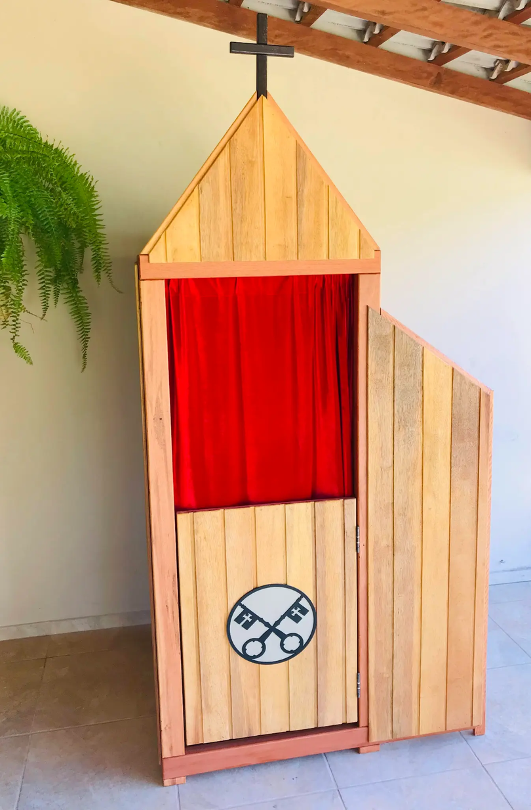
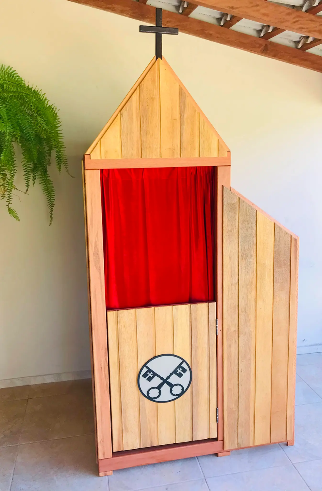

Confessionários Mater Ecclesiae
Confessionários artesanais feitos sob encomenda com materiais nobres e acabamento impecável
 

Modelo Mater Ecclesiae
R$ 4.300,00
+ frete a consultar
Características
- Feito sob encomenda
- Estrutura em eucalipto rosa
- Revestimento em cedrinho
- Porta com trava magnética
- Acabamento em stein ou laca
- Escurecimento com betume (se necessário)
- Não acompanha assento interno
- Não possui assoalho ou teto
Personalização Disponível
Vídeo de Apresentação
Especificações Técnicas
Materiais
- Estrutura: Eucalipto rosa
- Revestimento: Cedrinho
- Cortina: Tecido de alta qualidade
- Ferragens: Trava magnética
Acabamentos
- Stein natural
- Laca transparente
- Betume para escurecimento
- Verniz protetor
Personalização
- Ícone da porta customizável
- Posição do genuflexório
- Tonalidade da madeira
- Cor da cortina
Observações
- Não inclui assento interno
- Sem assoalho ou teto
- Fabricação sob medida disponível
- Frete calculado por região
Interessado em nossos confessionários?
Entre em contato conosco para solicitar um orçamento personalizado ou esclarecer dúvidas sobre nossos produtos.